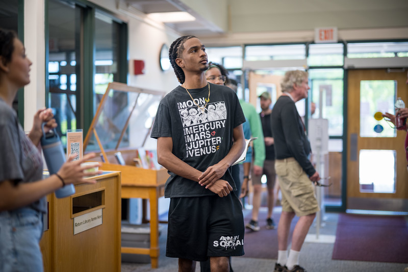

Bahamas-based • Caribbean-first • Community-first
Hand-built digital products for the Caribbean.
I build secure, practical software for real regional workflows — from SaaS platforms to automation and document systems.

Bahamas-based • Caribbean-first • Community-first
I build secure, practical software for real regional workflows — from SaaS platforms to automation and document systems.